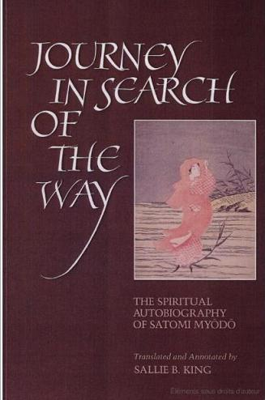

Đạt Ma tây lai truyền hà pháp
Lô hoa thiệp hải thủy phù phù
Tông Diễn thiền sư
Tạm dịch:
Đạt Ma truyền pháp ra sao?
Nhấp nhô trên biển một cành hoa trôi.
Tiểu sử tác giả
Ni sư Satomi Myodo (tục danh là Satomi Matsuno) sinh năm 1896, trong một gia đình nông dân nghèo tại Hokkaido. Không chấp nhận truyền thống cho rằng phụ nữ chỉ có thể là một vợ đảm, mẹ hiền; bà quyết tâm tìm thầy học đạo. Trải qua nhiều khó khăn, tham cứu nhiều pháp môn nhưng bà vẫn không tìm được điều bà muốn.
Bà đã tu theo Thần Đạo (Sinto), làm đồng cốt cho đền thờ Thánh Mẫu (Kami), và sau cùng chuyển qua tu thiền. Mặc dù siêng năng tu học nhưng bà vẫn không tiến bộ bao nhiêu cho đến khi gặp Thiền sư Yasutani (Bạch Vân lão sư).
Dưới sự chỉ dẫn của vị nầy, bà đã kiến tánh (Kensho) và trở nên một trong những ni sư lỗi lạc nhất của Thiền tông Nhật Bản. Bà đã đào tạo nhiều thế hệ học trò và có một tầm ảnh hưởng rất lớn trong giới tỳ kheo ni của Nhật ngày nay.
Bà qua đời vào năm 1978. Cuốn hồi ký “Michi” (tạm dịch: Hoa trôi trên sóng nước) là cuốn sách nói về cuộc hành trình tìm đạo đầy gian khổ kéo dài hơn 40 năm của tác giả.
Khi tạp chí Phật học Kyosho vừa khởi động loạt hồi ký nầy vào năm 1956, nó đã được các đọc giả, nhất là đọc giả phái nữ, say mê theo dõi. Lòng nhiệt thành và quyết tâm tìm đạo của bà là một tấm gương sáng cho tất cả những ai muốn bước chân vào cửa đạo. Ngoài ra, sự chứng đắc của bà đã đánh đổ quan niệm cổ hủ cho rằng chỉ có phái nam mới có thể thành công trên con đường tu học mà thôi.